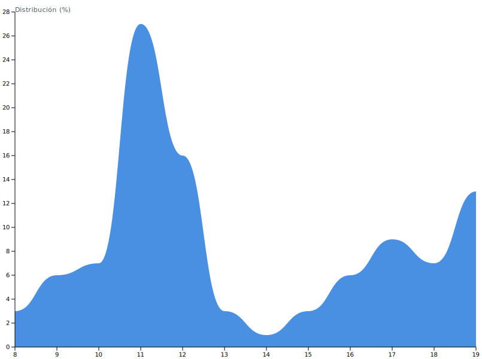

Mi año entre el gimnasio y los exámenes
¿A qué hora suelo ir más seguido al gimnasio?
¿A qué hora suelo tener más exámenes?
¿Qué relación existe entre gym y promedio de exámenes?

Conclusión breve
En este período, los meses con más visitas al gimnasio coincidieron, en general, con notas más bajas, mientras que cuando fui menos al gym mis calificaciones tendieron a ser más altas. Esto sugiere un posible trade-off en cómo distribuyo tiempo y energía entre entrenamiento y estudio. Nota: la muestra es pequeña y personal, por lo que no permite inferir causalidad ni generalizar.